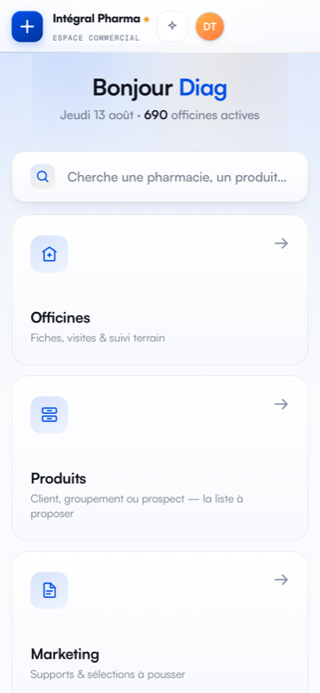
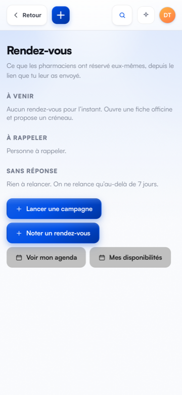

Repère
Aujourd’hui
Rendez-vous est la 8ᵉ tuile sur 14, et chaque tuile occupe presque tout l’écran. Voilà pourquoi on ne l’ouvre pas.
- Ce que ça change
- Rien — c’est l’état réel, capturé ce jour, pour que la comparaison se voie au lieu de se raconter.
- Le risque
- Le module reste invisible. Une fonctionnalité qu’on n’atteint pas est une fonctionnalité qui n’existe pas.


Direction 1
La barre d’onglets
Une barre permanente en bas, comme une vraie application. Rendez-vous est à un geste depuis n’importe où, sans jamais repasser par l’accueil.
- Ce que ça change
- Le module devient un lieu, pas une page. Le point rouge prévient d’un nouveau rendez-vous même quand tu es ailleurs dans l’app.
- Le risque
- Ça change la navigation de TOUTE l’app, pas seulement du module. Il faut choisir les trois autres onglets, et 14 tuiles ne rentrent pas dans quatre onglets — quelque chose finit dans « Plus ».
Rendez-vous
Jeudi 13 août · 2 aujourd’hui, 5 cette semaine
Pharmacie du Marché
Nantes · 45 min · Mme Leroy
Pharmacie de la Gare
Rezé · 45 min · 12 km, 28 min de route
Grande Pharmacie Centrale
Angers · 11h00
Pharmacie des Halles
Saint-Nazaire · 10h15
Direction 2
La journée d’abord
JARVIS s’ouvre sur ta journée : le prochain rendez-vous en grand, les suivants, deux actions. Les quatorze tuiles descendent dessous.
- Ce que ça change
- Le matin, tu ouvres l’app et tu sais où tu vas. Aucun geste à faire. La navigation, elle, ne bouge pas d’un pouce.
- Le risque
- Les jours sans rendez-vous, cette place est occupée pour rien — et l’accueil paraît vide. Il faut décider quoi y mettre ce jour-là.
Bonjour William
Jeudi 13 août · 690 officines actives
Ta journée
Infos du matinRuptures, prix, Journal officiel
OfficinesFiches, visites & suivi terrain
CopiloteQuoi proposer, à qui
Direction 3
Le hub plein écran
La tuile ouvre un vrai module, avec sa propre identité, sa page d’accueil et ses cinq entrées. L’accueil de JARVIS ne change pas.
- Ce que ça change
- Tout ce qui touche aux rendez-vous vit au même endroit, et se voit d’un coup d’œil. C’est la direction la plus simple à construire et la moins risquée.
- Le risque
- Le module reste à deux gestes, sous une tuile qu’il faut aller chercher. Ça règle l’organisation, pas la visibilité — le problème du repère 0 reste entier.
Rendez-vous
2 aujourd’hui · 5 cette semaine · 3 liens sans réponse
Prochain — dans 1 h 12
9h30 · Pharmacie du MarchéNantes · Mme Leroy · 8 km, 19 min de route
Mon agenda15 jours
Noter un RDVpris au téléphone
Envoyer un lienil choisit son créneau
Mes disposjours et horaires
Mon lien permanentcelui que tu envoies à la main
Direction 4
Le fil du temps
La journée n’est pas une liste, c’est une durée. Une frise de 8h à 19h : les rendez-vous sont pleins, l’agenda personnel est rayé, et le temps libre se clique pour poser un rendez-vous dessus.
- Ce que ça change
- Tu vois tes trous, pas seulement tes rendez-vous. Noter un RDV devient un geste sur l’heure voulue, plus un formulaire à remplir.
- Le risque
- Une journée à un seul rendez-vous donne un écran très vide. Et sur un téléphone, onze heures dans 700 px, c’est serré : il faudra sûrement défiler.
Jeudi 13 août
2 rendez-vous · 6 h 30 encore réservables
Direction 5
La tournée sur la carte
Une journée de commercial n’est pas une liste, c’est un trajet. Les rendez-vous sont des points numérotés reliés, avec les kilomètres et le temps de route entre eux.
- Ce que ça change
- Tu vois immédiatement si ta journée tient debout géographiquement — c’est exactement ce que le moteur de créneaux calcule déjà, mais que personne ne voit.
- Le risque
- La carte de cette maquette est dessinée. La vraie demande une bibliothèque de cartes, et Leaflet est déjà dans l’app mais lourd à ouvrir sur un téléphone. C’est la direction la plus chère à construire.
L’ordre de la journée
Direction 6
Le geste permanent
L’app ne change pas d’un pouce. Un bouton rond flotte sur tous les écrans, et ouvre une feuille pour noter un rendez-vous en trois gestes.
- Ce que ça change
- Le geste le plus fréquent — noter ce qu’on vient de décrocher au téléphone — devient possible sans quitter ce qu’on faisait. C’est le chemin le plus court vers l’abandon du carnet papier.
- Le risque
- Ça met en avant UN geste, pas le module. L’agenda, les dispos et les liens restent aussi enfouis qu’avant. Et un bouton flottant masque toujours un bout de contenu.
Officines
Produits
Marketing
Noter un rendez-vous
Trois gestes. Le reste est repris du fichier.